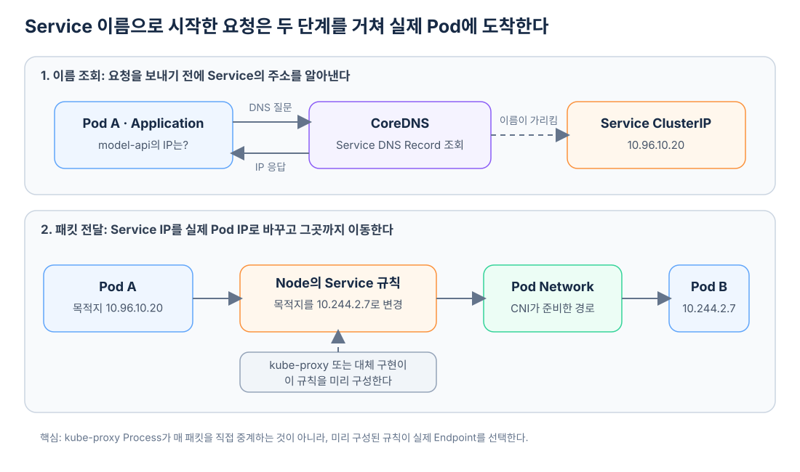

Kubernetes 안에서 실행되는 Application은 다른 Application을 호출할 때 보통 개별 Pod IP를 직접 저장하지 않는다. Pod가 다시 만들어지거나 다른 Node로 옮겨지면 IP가 바뀔 수 있기 때문이다.
대신 호출받는 Pod들 앞에 Service를 두고, 호출하는 Application은 model-api처럼 변하지 않는 Service 이름을 사용한다. 하지만 이름만 안정적으로 만든다고 패킷이 목적지 Pod까지 저절로 이동하는 것은 아니다. 이 요청이 도착하려면 DNS, Service 전달 규칙과 Pod Network가 차례로 서로 다른 문제를 해결해야 한다.
하나의 요청을 따라가 보자
다음과 같은 Cluster가 있다고 가정하자.
| 대상 | 주소 |
|---|---|
| 호출하는 Pod A | 10.244.1.5 |
Service model-api |
10.96.10.20 |
| Service 뒤의 Pod B | 10.244.2.7 |
| Service 뒤의 Pod C | 10.244.3.9 |
Pod A의 Application은 http://model-api:8000으로 요청한다. 여기서부터 이름을 주소로 바꾸는 과정과, 그 주소로 실제 패킷을 보내는 과정이 이어진다.

먼저 CoreDNS가 Service 이름을 ClusterIP로 바꾼다
Pod A는 먼저 model-api가 어떤 IP인지 DNS에 묻는다. 같은 Namespace라면 짧은 이름인 model-api를 사용할 수 있고, 전체 이름은 보통 model-api.<namespace>.svc.cluster.local 형태다.
CoreDNS는 일반적인 ClusterIP Service의 이름에 대해 Service의 ClusterIP를 응답한다.
model-api
→ DNS 조회
→ 10.96.10.20
여기까지 CoreDNS가 한 일은 이름을 주소로 바꾼 것뿐이다. CoreDNS가 Application의 HTTP 요청을 대신 전달하거나 실제 Pod를 선택한 것은 아니다. DNS 응답을 받은 Pod A가 이제 목적지를 10.96.10.20:8000으로 하는 패킷을 보낸다.
Service의 ClusterIP는 실제 Pod의 IP가 아니다
10.96.10.20은 Service가 제공하는 안정적인 가상 IP다. 특정 Pod의 Network Interface에 붙은 주소가 아니며, 하나의 Machine이 그 주소에서 Application 요청을 받아 처리하는 것도 아니다.
아무 Node도 이 IP를 갖고 있지 않은데 패킷이 길을 잃지 않는 이유와 목적지 Node가 결정되는 정확한 순서는 아무 Node도 갖고 있지 않은 ClusterIP로 보낸 패킷은 어디로 갈까?에서 출발 Node의 Packet 처리 단계부터 확대해 살펴본다.
Service의 Selector에 맞는 실제 Backend 주소들은 EndpointSlice에 기록된다. 위 예시에서는 다음 두 주소가 후보가 될 수 있다.
Service 10.96.10.20:8000
├─ Pod B 10.244.2.7:8000
└─ Pod C 10.244.3.9:8000
Pod가 교체되어 주소가 바뀌면 EndpointSlice가 갱신된다. 호출자는 이 변화와 관계없이 같은 Service 이름과 ClusterIP를 계속 사용할 수 있다.
kube-proxy는 패킷마다 앞에서 기다리는 중계 서버가 아니다
각 Node의 kube-proxy는 API Server에서 Service와 EndpointSlice의 변화를 관찰한다. 그리고 Service의 IP와 Port로 향하는 연결을 실제 Endpoint 중 하나로 보내도록 Node의 Packet 처리 규칙을 구성한다.
따라서 다음처럼 이해하는 것은 정확하지 않다.
Pod A → kube-proxy Process → Pod B
일반적인 Linux 구성에서는 실제 패킷이 kube-proxy Process에 들어갔다가 다시 나오는 것이 아니다. kube-proxy가 미리 Kernel의 iptables, IPVS 또는 nftables 규칙을 만들어 놓고, 패킷이 도착하면 그 규칙이 목적지를 바꾼다.
원래 목적지: 10.96.10.20:8000
변경된 목적지: 10.244.2.7:8000
이제 목적지는 Service IP가 아니라 선택된 Pod B의 IP다. Cilium처럼 eBPF를 사용하는 구현은 kube-proxy 대신 이 Service 전달 기능을 구현할 수도 있다.
CNI가 선택된 Pod까지 갈 수 있는 길을 만든다
Service 전달 규칙은 목적지를 실제 Pod IP로 바꿨지만, 그 Pod까지 도달할 Network 경로도 필요하다. 이 기반을 준비하는 것이 CNI Plugin을 사용하는 Pod Network다.
Pod B가 같은 Node에 있다면 패킷은 그 Node 안에 구성된 가상 Interface와 Route 등을 따라간다. 다른 Node에 있다면 CNI 구현이 준비한 Route나 Overlay Tunnel 등을 통해 목적지 Node로 이동한다.
같은 Node
Pod A → Node 내부의 Pod Network → Pod B
다른 Node
Pod A → Node A의 Pod Network → Node 사이의 경로 → Node B의 Pod Network → Pod B
따라서 다중 Node일 때만 CNI가 필요한 것은 아니다. 일반적인 Pod는 단일 Node에서도 자신만의 Network Namespace와 Interface를 가지므로, Pod에 IP를 부여하고 서로 연결하려면 Pod Network 구현이 필요하다. 다중 Node가 되면 이 경로가 Node 사이까지 확장된다.
세 역할을 분리하면 흐름이 보인다
Pod에서 Service 이름으로 시작한 요청은 다음과 같이 정리할 수 있다.
CoreDNS
Service 이름을 Service IP로 바꾼다.
kube-proxy 또는 대체 구현
Service IP가 실제 Pod IP로 연결되도록 전달 규칙을 만든다.
CNI 기반 Pod Network
선택된 Pod IP까지 패킷이 갈 수 있는 길을 만든다.
Service Object 자체가 패킷을 받아 중계하는 Process는 아니다. Service는 안정적인 가상 주소와 Backend 집합을 표현하고, 그 상태를 관찰한 구성요소들이 실제 Network 동작을 구현한다.
한 문장으로 줄이면 다음과 같다.
CoreDNS가 Service의 주소를 알려 주고, kube-proxy가 준비한 규칙이 실제 목적지를 고르며, CNI 기반 Pod Network가 그 목적지까지 패킷을 전달한다.